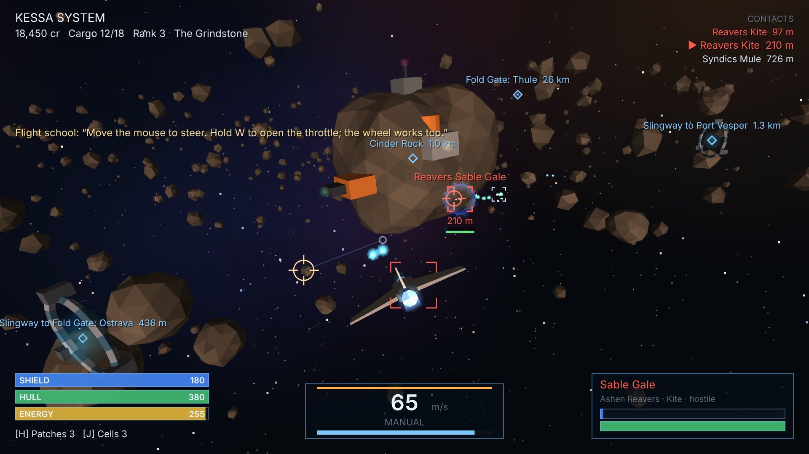

3D space trading and combat
VAGRANT STARS
One ship, six suns and nobody to answer to. Haul cargo between thirteen ports, hunt raiders for the Wardens or run contraband past them, ride the slingways, jump the fold gates, and trade your way from a two-gun Sparrow up to the fastest interceptor in the Tessel Reach.
- Cursor-led 3D flight with cruise drive, afterburner and drift
- Six hulls, ten guns, missiles, shields and a living economy
- Six factions that remember what you did
- Contract boards and a five-part storyline
Play VAGRANT STARS Mouse and keyboard · WebGL